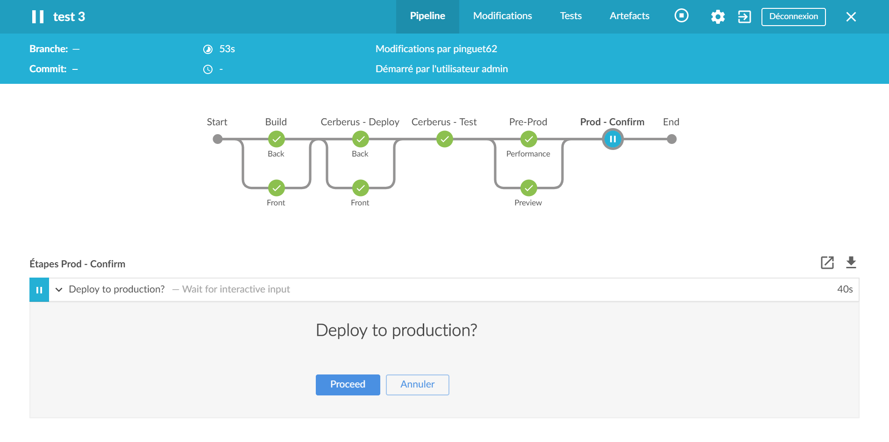

Continuous Deployment

Rétrospective
Mise en production
Mise en production
Peur
Peu fréquente
Erreurs manuelles
Personnes tiers
Problème : Combien de temps pour changer un libellé ?
Méthode agile

http://www.agilenutshell.com/agile_vs_waterfall
Méthode agile
Objectif : feedback régulier
Cible : build
Problème : 1 seul déploiement
Le déploiement continu
Définition
Martin Fowler : « Continuous Delivery is a software development discipline where you build software in such a way that the
software can be released to production at any time. »
Continuous ...

http://www.bmc.com/blogs/continuous-delivery-continuous-deployment-continuous-integration-whats-difference
Objectifs & Gains
Feedback régulier
Mise en production sécurisée
Pourquoi
cette présenttion ?
Découverte d'une nouvelle méthodologie
Théorie VS Pratique
Remise en cause des pratiques habituelles
Avant de commencer
Bonne pratique
Qu'est-ce qu'une bonne pratique ?
Recommandation
Validée dans la majorité des situations
Peut être adaptée
Choix de la méthodologie
Dépend du contexte
N'est pas définitive
Oser essayer
« On a toujours fait ça comme ça ! »
« Tout le monde fait comme ça ! »
« Peut-être qu'un jour... »
Mise en situation
Hypothèse
Respect de la méthodologie
1 commit = 1 mise en production
Type de projet
Projet "normal"
(env. 95% des cas ?)
Projet final
bibliothèque
Pas de version concurrentes
Projet multi-modules
front / back / ...
Les réflexes
Multi-dépôts
Git flow
Tests manuels
Release
Tag
Scripts SQL
Déploiement manuel
Le pipeline
Le cerveau
Orchestrateur
Tests
unitaire, intégration, fonctionnel (Cerberus), performance, manuel, ...
Environnement
DEV, QA, Preview, PROD, ...
Pipeline
séquentiel/parallèle, fork/join, boutons, ...
Jenkins 2
Jenkins 2
pipeline {
agent any
stages {
stage('Build') {
parallel {
stage('Back') {
steps {
dir(path: 'back') {
echo 'mvn clean install'
}
}
}
stage('Front') {
steps {
dir(path: 'front') {
echo 'ng build'
}
}
}
}
}
stage('Cerberus - Deploy') {
parallel {
stage('Back') {
steps {
echo '...'
}
}
stage('Front') {
steps {
echo '...'
}
}
}
}
stage('Cerberus - Test') {
steps {
echo '...'
}
}
stage('Pre-Prod') {
parallel {
stage('Performance') {
steps {
echo '...'
}
}
stage('Preview') {
steps {
echo '...'
}
}
}
}
stage('Prod - Confirm') {
steps {
input 'Deploy to production?'
}
}
stage('Prod - Deploy') {
steps {
echo '...'
}
}
}
}Conditions
100% automatisé !
« Pas d'humain, pas de problème... »
Maîtrisé
Modulable
Linéaire
Jusqu'à la production
Stable / Sécurisé
Gestionnaire de version (1/3)
Repository: mono VS multi
Problèmes
Versionning des dépendances ?
État entre les 2 commits ?
Pipeline : duplication ? join ? hook ?
Retour au besoin
Les projets sont-ils totalement indépendants ?
La dépendance va-t-elle être réutilisée ailleurs ?
Leur cycle de vie sont-ils différents ?
Comparer les coûts !
Solution
Centraliser les modules dans le même dépôt
back-office, front-office, documentation, tests, ...
Avantage
Maitrise des versions
Tests
end-to-end
Déploiement
Pipeline unique & simple
Limites
Outils & Fichier de configuration
Info extrémiste...
Mono-repository niveau entreprise !
Facebook (Mercurial), Google (Perforce)
Gestionnaire de version (2/3)
branches & merge...
Git flow

Exemple
Release

Hotfix : idem
Problèmes
Opérations manuelles
perte de temps, risque
Merges
conflit, risque
Historique incompréhensible
historique non-linéaire
Retour au besoin
A quoi servent les branches ?
Plusieurs versions avec cycle de vie différents
(bibliothèque)
En a-t-on réellement besoin ?
Solutions
Ne pas utiliser de branche
except: local & feature
Travailler sur le master/trunk
Avantages
Historique linéaire
Absence de sprint (agile)
Limites
Très grosse modification
Info extrémiste...
master/trunk only niveau entreprise !
Shazam
Gestionnaire de version (3/3)
La confiance
Problèmes
Liberté de tout casser
Hypothèse de la vitre brisée
Solutions
Lock master + Pull request + validation
Revue de code
Avantages
Ceux des revues de code
Partage des connaissances
Un grand pouvoir implique de grandes responsabilités !
Feature flipping
Feature Toggles
Situation
Les très grosses modifications
Problèmes
Merge/Rebase (des coéquipiers)
Mise en production
Revert
Solution
Feature flipping / Feature Toge es
if (ff.isEnabled("SEND_EMAIL"))
mailSender.send("Hello world!", "gibbs@ncis.us")En 2 temps
Administration
Gestion des droits
Vous le faites déjà
Méthode agile : sous-tâches, incrémental/itératif
Suppression de table (BDD) : renommage
Avantages
Bascule dynamique
Revue de code continue
Limites
Avec parcimonie
Testing
Le versionning
Habitude
Mise en production = release
Montée de version
Tag
Maven release

Problèmes
Nommage de la version ?
<majorversion [> . <minorversion [> . <incrementalversion ] ] [>
- <buildnumber | qualifier ]>
pull/update inutile
Historique incompréhensible
Retour au besoin
Pourquoi change-t-on de version ?
Pourquoi tague-t-on la version ?
Solutions
Sources : version constante
Packaging : facultatif
incrémental, timestamp, révision gestion de versions, ...
fichier interne, suffix, ...
La base de données
Habitude
Script numéroté
Exécution manuelle
Problèmes
Actions manuelles
Versionning
Rollback
Solutions
Liquibase
versionning, multi-SGBC, intégration (Maven, Jenkins)
<?xml version="1.0" encoding="UTF-8"?>
<databaseChangeLog>
<changeSet id="1" author="pinguet62">
<createTable tableName="person">
<column name="id" type="int" autoIncrement="true">
<constraints primaryKey="true" nullable="false"/>
</column>
<column name="name" type="varchar(50)"/>
</createTable>
</changeSet>
</databaseChangeLog>Intégré au pipeline
Le déploiement
Problèmes
Client lourd
Base de données
Indisponibilité
Solutions
Webapp
Auto-update
Electron
Docker & co.
Infos...
Amazon
11.6 sec
Facebook
2 / jour
Conclusion
1 dépôt
1 pipeline complet
Commit sur master/trunk
Docker & co.
Simple, basique !